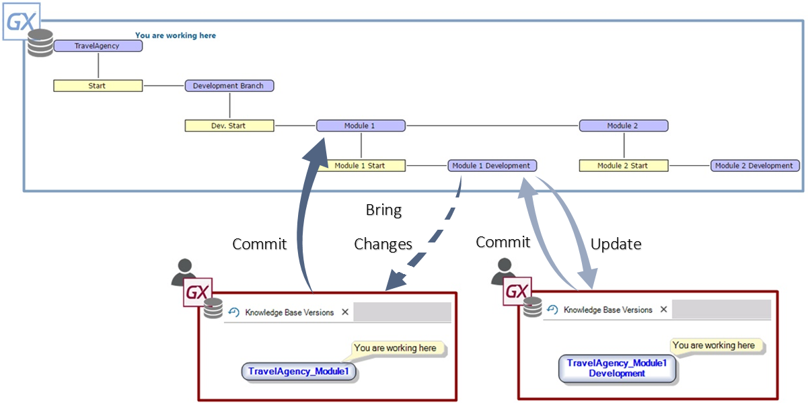

Versioning the application by Modules is one of the Version Management and Work Methodology with GeneXus Server scenarios. In this case, the development team works on a Knowledge Base divided into several modules (purchase module, cashier module, etc.) and one or several testing teams. The main idea is to have independent Knowledge Base Versions for each module. Version ManagementThe method is similar to the Versioning the application to manage the different stages of Validation or Approval scenario, except for the fact that the team must define a version for each module. All the versions associated with the modules are set parallel to one another and based on the General Knowledge Base Versions (or Trunk), where we have the whole application. The developer(s) of a module work on a local Knowledge Base connected to the Knowledge Base's version associated with the module. Work MethodologyIn each module we must apply the following methodology:
If in addition to having a testing team to test modules separately, we also need to perform an integrated test, we must define a version to integrate all the modules, based on the General version. This version is updated in a way similar to what has been explained (doing Bring Changes of the test versions of each module and doing Commit on the integrated test version). The figure below shows that one version was defined for each module in the application, and another version was established for each testing team, and how each of these versions is updated. 
|